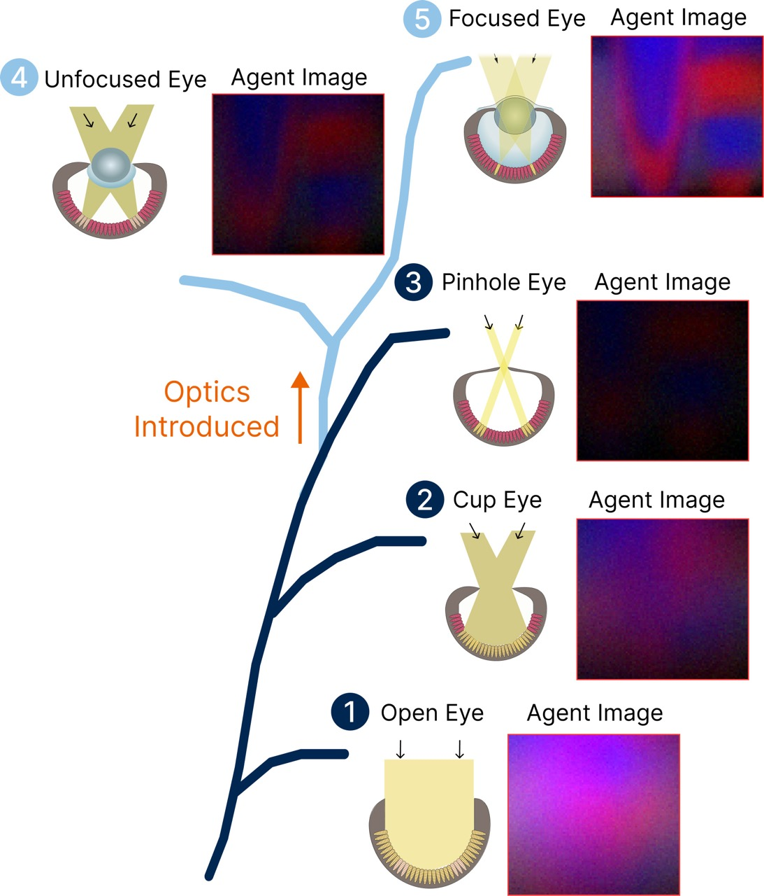
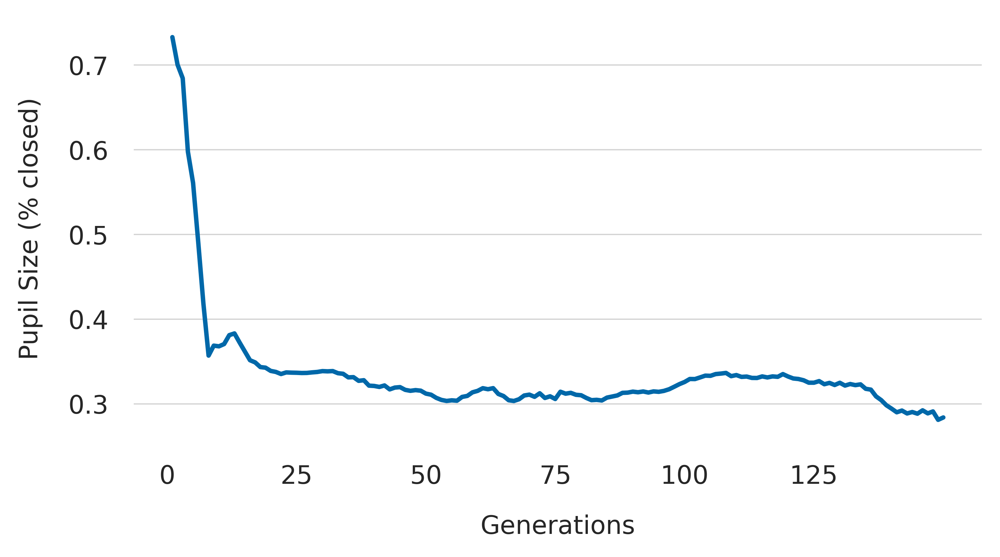
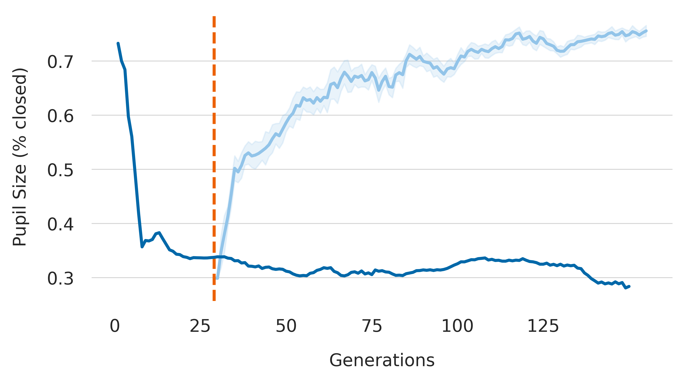

Early visual systems faced a fundamental trade-off between light
collection and acuity, progressing
from simple light-sensitive patches to cup-shaped eyes with smaller
apertures. While
decreasing the size of the aperture and creating pinhole-like designs is
a straightforward way to
improve image formation, they severely limit light collection. This
trade-off creates a performance
ceiling, where further improvements in spatial resolution through
pinhole designs are limited
by the lack of light. This inherent limitation ultimately restricts the
visual capabilities of such
systems, causing a saturation in performance. We see this manifested in
our results where agents
with pinhole eyes plateau in fitness and are not able to achieve the
performance benefits of improved spatial resolution.
What if we introduced optical elements that can redirect light into
our agents? Lenses emerged as a innovation in biological evolution and
we investigate the impact
of enabling optical elements capable of bending light in our framework.

Agents Evolve to focusing lenses to
resolve a fundamental trade-off
in vision between light collection and spatial resolution. Green
represents the food, and red the poison. The green and red are
not visible to the agent, and it must use the textures on the
spheres to discriminate between the two.
We examined how adding optical elements could alter the evolutionary
path of vision in agents performing a DETECTION task. First, in the
EYE
WITHOUT OPTICS experiment, only pupil size could mutate,
mimicking early eye evolution. Initially, agents had fully open
apertures
for maximum light intake but poor image sharpness. Over generations,
they
evolved cup-shaped eyes to reduce blur and eventually near-pinhole eyes,
balancing sharpness and brightness. This progression demonstrated the
natural trade-off between spatial resolution and light collection.
At generation 30, we introduced optical elements in the EYE WITH
OPTICS experiment, allowing agents to mutate lens shape and
refractive index. The initial random lenses reduced performance, but by
generation 50, they evolved into slightly convex shapes, showing early
lens-like focusing. Eventually, agents developed well-defined lenses
with
symmetric point spread functions while maintaining larger pupils. This
overcame the pinhole trade-off, enabling both sharp vision and higher
light throughput, leading to improved task performance.
The lens represents a fundamental innovation in the evolutionary
solution space
to account for the demands of achieving accurate environmental
perception.

The EYE WITHOUT OPTICS (dark
blue) leads to different pupil sizes
in our agents
and lower performances (see paper for details).

We intervene at
Generation 30 to allow agents to innovate optical components.
Our EYE WITH OPTICS (light blue) agents evolve back to
larger pupil sizes and have higher performances (this time by
innovating
lenses).